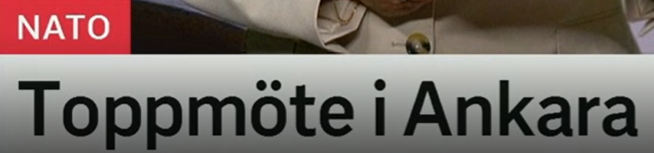
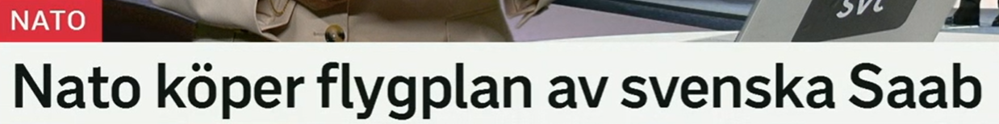
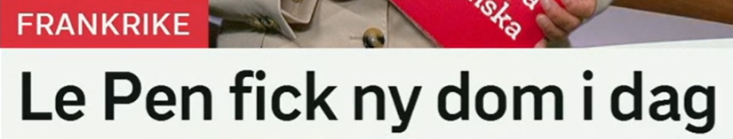
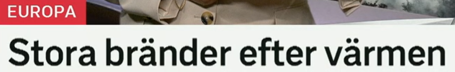
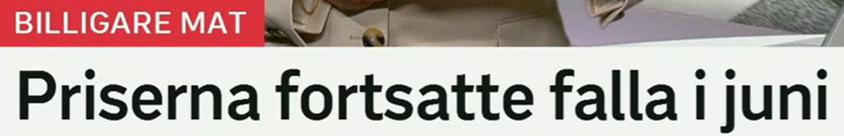
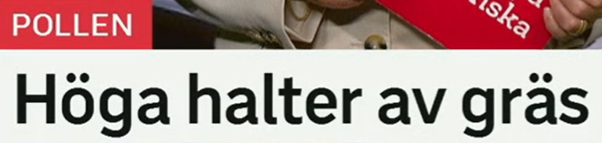

标题总览
Snipaste_2026-07-08_20-18-44.png
Snipaste_2026-07-08_20-19-27.png
Snipaste_2026-07-08_20-19-49.png
Snipaste_2026-07-08_20-20-40.png
Snipaste_2026-07-08_20-22-24.png
Snipaste_2026-07-08_20-22-39.png

Toppmöte i Ankara
安卡拉举行峰会。
名词短语标题省略“举行”；截图未说明参会者、议题或结果。
toppmöte · ett-名词
词形：toppmötet–toppmöten–toppmötena
构词：topp + möte
近义：högnivåmöte
搭配：hålla/delta i ett toppmöte
möte · ett-名词
词形：mötet–möten–mötena
近义：sammanträde（正式）, träff
搭配：kalla till möte
动词：möta–möter–mötte–mött
Ledarna deltar i ett toppmöte. 各国领导人参加峰会。
Mötet hålls i Ankara. 会议在安卡拉举行。

Nato köper flygplan av svenska Saab
北约从瑞典萨博购买飞机。
köpa något av någon 表示“从某人/机构购买某物”。截图未给数量、型号或金额。
köpa av
词形：köper–köpte–köpt
结构：köpa något av någon
近义：köpa från, anskaffa
反义：sälja till
flygplan · ett-名词
词形：flygplanet–flygplan–flygplanen
相关：stridsflygplan, passagerarplan
搭配：köpa/bygga flygplan
提示：单复数不定形式同形。
De köper utrustning av Saab. 他们从萨博购买设备。
Saab säljer flygplan till kunden. 萨博向客户出售飞机。

Le Pen fick ny dom i dag
勒庞今天收到新的判决。
fick 是 få 的过去式；dom 在司法语境中是判决，不是英语的 “them”。
få · 动词
词形：får–fick–fått
含义：得到；获准
搭配：få en dom, få tillstånd
近义：motta, erhålla（正式）
dom · en-名词
词形：domen–domar–domarna
动词：döma–dömer–dömde–dömt
搭配：överklaga/meddela en dom
相关：domstol 法院
Domstolen meddelade en ny dom. 法院宣布一项新判决。
Domen kan överklagas. 该判决可以上诉。

Stora bränder efter värmen
高温过后发生大火。
efter 表时间关联；标题没有给出火灾地点、规模或明确因果链。
brand · en-名词
词形：branden–bränder–bränderna
近义：eldsvåda
搭配：en brand bryter ut, släcka branden
相关：brandrisk, brandvarning
värmen · 定形式
词形：en värme–värmen
近义：hetta, höga temperaturer
搭配：efter värmen, extrem värme
反义：kyla
En stor brand bröt ut. 发生了一场大火。
Brandrisken är hög efter värmen. 高温过后火灾风险很高。

Priserna fortsatte falla i juni
价格在六月继续下降。
两个过去式连续出现：fortsatte + 动词原形，表示某趋势在过去继续。
fortsätta + 动词
词形：fortsätter–fortsatte–fortsatt
结构：fortsätta falla / fortsätta att falla
近义：fortgå
反义：sluta
falla · 动词
词形：faller–föll–fallit
标题义：下降
近义：sjunka, minska
反义：stiga, öka
Matpriserna fortsatte att falla. 食品价格继续下降。
Priserna föll kraftigt i juni. 价格在六月大幅下跌。

Höga halter av gräs
草的含量/浓度很高。
栏目为花粉；标题原文写 gräs。可理解为与草相关的高浓度，但具体测量对象应以原报道为准。
halt · en-名词
词形：halten–halter–halterna
含义：含量、浓度
搭配：höga/låga halter av
近义：koncentration, nivå
gräs · ett-名词
词形：gräset；通常作不可数
相关：gräspollen, gräsmatta
搭配：klippa gräset
场景：自然、园艺、花粉预报。
Det finns höga halter av pollen i luften. 空气中花粉浓度很高。
Halterna väntas sjunka. 预计浓度将下降。
重点词表、标题规律与自测
| 词汇 | 中文 | 搭配 | 近义/反义 |
|---|---|---|---|
| toppmöte | 峰会 | delta i ett toppmöte | högnivåmöte |
| köpa av | 从……购买 | köpa något av någon | köpa från |
| dom | 判决 | meddela/överklaga domen | beslut |
| brand | 火灾 | branden bryter ut | eldsvåda |
| fortsätta | 继续 | fortsätta falla | fortgå / sluta |
| falla | 下降、落下 | priserna faller | sjunka / stiga |
| halt | 含量、浓度 | höga halter av | koncentration |
过去趋势
fortsatte falla = 过去继续下降；当前趋势用 fortsätter falla。
月份介词
i juni 表“在六月”；具体日期用 den 7 juli。
填空
1. Priserna ___ falla.
2. Domen kan ___.
3. Höga halter ___ pollen.
答案
1. fortsatte 2. överklagas 3. av
翻译
“火灾爆发”和“从萨博购买飞机”。
参考答案
En brand bryter ut；köpa flygplan av Saab